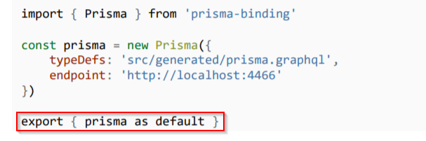

STEP 1 :
Export prisma from prisma.js so that all the methods in prisma graphql api can be used in our project

STEP 2:
Import prisma in app.js and pass to ctx. Like so...

STEP 3:
Now in resolver functions we have access to prisma. Hence it can be used like this.